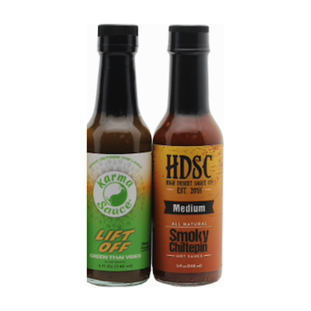

A new Chrome extension
One sentence in. A filled checkout out.
Add to ChromeShop Heat Hot Sauce
Checkout
Delivery
Dana Levi
Herzl 1, Jerusalem 9226708
Israel
dana@example.com
Order summary

Order summary
Orders are placed on the shop, not inside Knili.
Recent downloads
Extensions
Chrome blocks links to chrome:// pages, so step two copies instead of clicking.
Add to Chrome